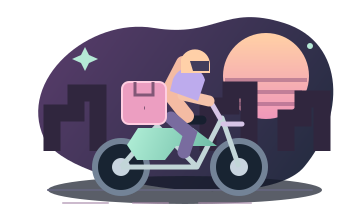
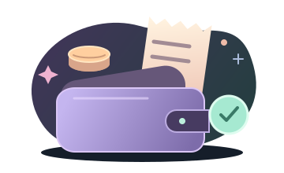
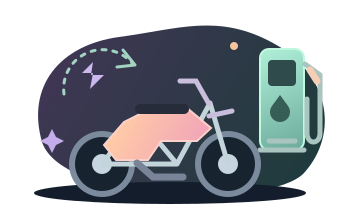
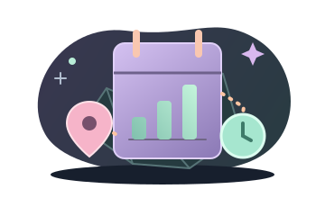
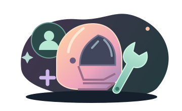

SEU PAINEL
Bora fazer um bom dia.
Cada entrega conta. Acompanhe o que fica para você.

RODAGEM · 2.1.0R$ 0,00
Seus ganhos menos os gastos do fechamento.
Sua meta do dia
Defina sua meta
Escolha quanto você quer ter de saldo ao fim do dia.
Você define o ritmo. A gente organiza.Um app com a sua rotina
Escolha sua jornada, cadastre sua moto e deixe os próximos lançamentos mais rápidos.
NA RUA
Sua jornada
00:00:00
Inicie para acompanhar suas horas. As pausas ficam fora da conta.
Use os controles quando estiver parado e em segurança.
UM TOQUE E PRONTO
O que vamos fazer?
CONSTÂNCIA É TUDO
Seus últimos 7 dias
Seu próximo fechamento começa a desenhar essa história.
DA MOTO AO SEU BOLSO
Conheça seu custo por km
Dois tanques cheios ajudam a descobrir quanto a moto consome de verdade.
FECHAMENTO
Seu dia, na ponta do lápis.
Anote o que entrou e o que saiu. O saldo aparece na hora.

Fechamento do dia
Valores em R$MINHA MOTO
Sua parceira de todo dia.
Conheça o consumo real e planeje seu combustível.

Novo abastecimento
HISTÓRICO
Seu corre tem história.
Reveja, ajuste e acompanhe cada lançamento.

MEU PERFIL
O seu jeito de rodar.
Ajuste uma vez. Ganhe tempo em cada fechamento.

Primeira vez por aqui?
Comece o turno no Início, registre cada abastecimento em Minha moto e salve seus ganhos no Fechamento. O Histórico reúne tudo.
SEU CAMINHO
Cada quilômetro conta.
O GPS ajuda a preencher seus km. A tela bloqueada ou o segundo plano podem interromper o registro.
A distância é uma estimativa por GPS. Sinais imprecisos e intervalos sem posição não viram quilômetros inventados.
Bateria e precisão: o modo econômico pede menor precisão e usa intervalos maiores. Se o sinal estiver ruim, Mais precisão pode melhorar o registro, consumindo mais bateria. O consumo depende do aparelho e do navegador.
Mantenha o app visível: tela bloqueada ou uso em segundo plano podem suspender a localização. Ao voltar, confira os trechos sem sinal. O app não substitui o hodômetro e permite corrigir os km no fechamento.
Seu trajeto fica neste aparelho. São guardados até 10 percursos recentes. Ao exibir as ruas, a área visível é solicitada ao OpenStreetMap. As ruas precisam de internet; a trilha registrada e os km continuam disponíveis sem elas.